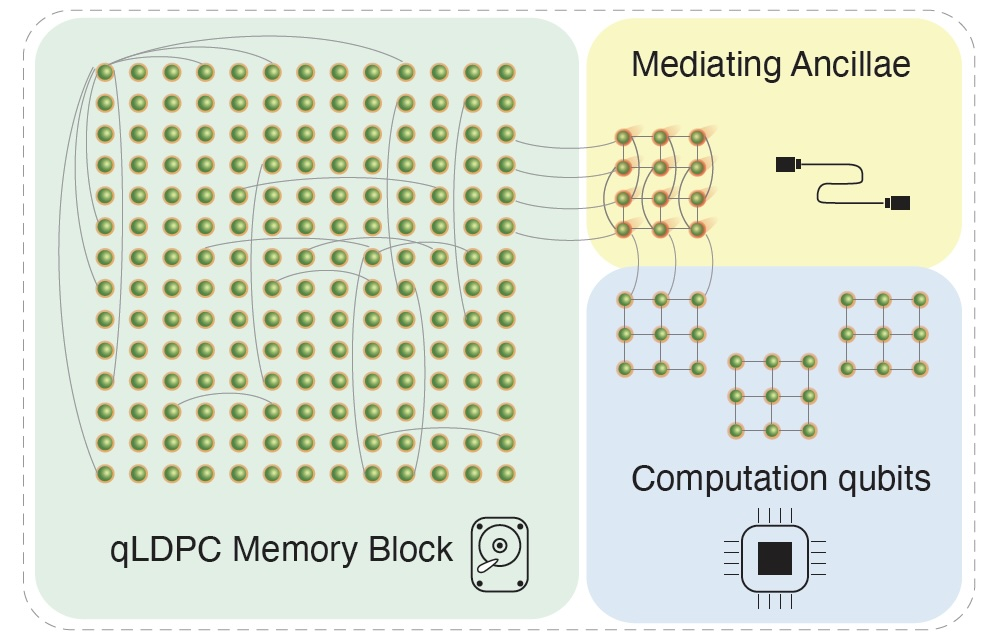
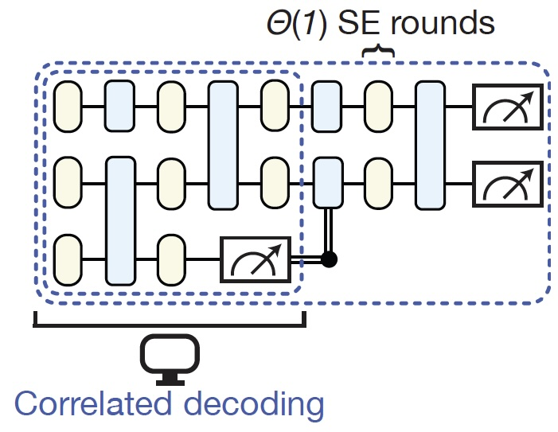
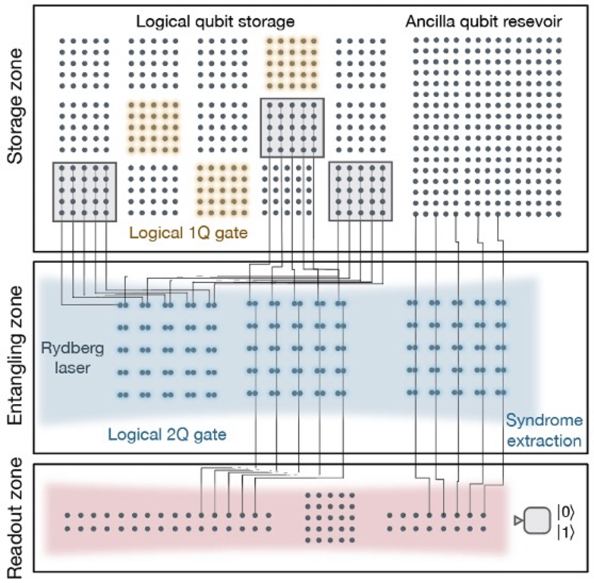
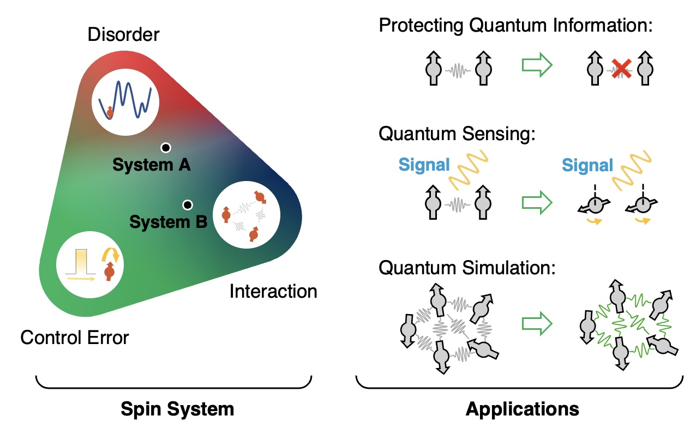
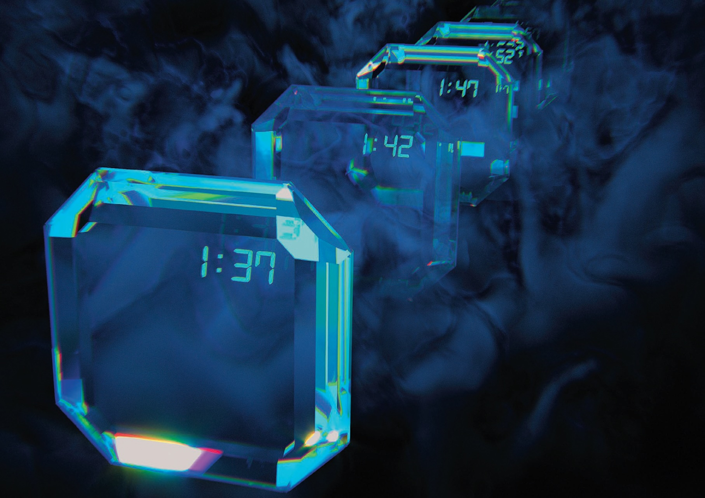
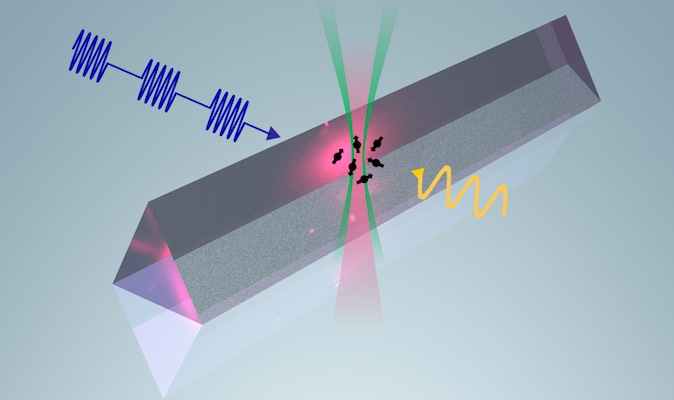
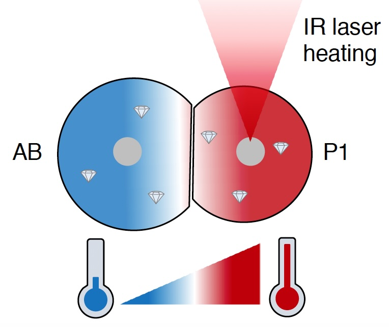
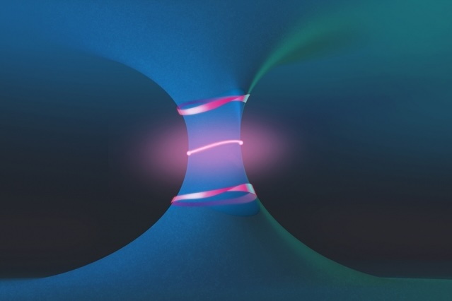

|
Research
My recent work focuses on the development of novel fault-tolerant architectures for large-scale quantum computers, spanning quantum error correction, quantum simulation, compilation, and hardware architecture.
See my google scholar profile for a list of publications.
Quantum Error Correction: Theory and Implementation
Quantum error correction (QEC), where many physical qubits redundantly encode logical information and correct errors, is at the core of realizing large-scale quantum computers: it bridges the massive gap between error rates required (\(<10^{-12}\)) and realistic hardware error rates (\(10^{-2}- 10^{-4}\)). Unfortunately, it also comes with a significant overhead, with standard schemes based on the surface code and lattice surgery requiring thousands of physical qubits per logical qubit and resulting in a 30\(\times\) slow down of the logical clock speed relative to the physical clock speed.
How can we reduce this overhead? Our work has been exploring novel QEC schemes, motivated by hardware capabilities of reconfigurable quantum platforms such as neutral atom arrays, to lower the space-time cost of QEC. We have also been exploring experimental realizations of QEC on neutral atom hardware, including one of the first realizations of logical quantum algorithms.
Quantum Low-Density Parity-Check Codes
One approach we explored is to use quantum low-density parity-check (qLDPC) codes with higher encoding rate, reducing the space overhead. We show this approach can have competitive thresholds, can be implemented efficiently on neutral atom hardware, and has some convenient logical gates:
|
 |
Q. Xu\(^*\), J. P. Bonilla Ataides\(^*\), C. A. Pattison, N. Raveendran, D. Bluvstein, J. Wurtz, B. Vasi\(\check{\textrm{c}}\), M. D. Lukin, L. Jiang\(^\dagger\), H. Zhou\(^\dagger\), ‘‘Constant-Overhead Fault-Tolerant Quantum Computation with Reconfigurable Atom Arrays", Nature Physics 20, 1084 (2024); QIP ’24
Q. Xu, H. Zhou, G. Zheng, D. Bluvstein, J. P. Bonilla Ataides, M. D. Lukin, L. Jiang, ‘‘Fast and Parallelizable Logical Computation with Homological Product Codes", arXiv:2407.18490
|
Transversal Algorithmic Fault Tolerance
Another approach is to use transversal gates and only \(O(1)\) rounds of syndrome extraction per logical gate, reducing the time overhead. We show this approach can speed up the logical clock speed by a factor of the code distance \(d\), assuming fast classical decoding:
|
 |
H. Zhou\(^{\dagger,*}\), C. Zhao\(^*\), M. Cain, D. Bluvstein, C. Duckering, H.-Y. Hu, S.-T. Wang, A. Kubica, M. D. Lukin\(^\dagger\), ‘‘Algorithmic Fault Tolerance for Fast Quantum Computing", arXiv:2406.17653 (2024)
M. Cain, C. Zhao, H. Zhou, N. Meister, J. P. Bonilla Ataides, A. Jaffe, D. Bluvstein, M. D. Lukin, ‘‘Correlated Decoding of Logical Algorithms with Transversal Gates", arXiv:2403.03272
|
Experimental Realizations of Quantum Error Correction
It's a particularly exciting time for quantum error correction, with early experimental demonstrations becoming accessible. In this experimental work led by Harvard University, with contributions from QuEra, UMD/NIST and MIT, we report the realization of a programmable quantum processor with up to 48 encoded logical qubits, utilizing the high control parallelism in neutral atom systems. We demonstrate improvement of surface code two-qubit logic gates by scaling the code distance from d=3 to d=7, fault-tolerantly prepare logical GHZ states, and realize computationally complex sampling circuits with up to 48 logical qubits, 228 logical two-qubit gates and 48 logical CCZ gates. These results herald the advent of early error-corrected quantum computation and chart a path towards large-scale logical processors.
|
 |
D. Bluvstein, S. J. Evered, A. A. Geim. S. H. Li, H. Zhou, T. Manovitz, S. Ebadi, M. Cain, M. Kalinowski, D. Hangleiter, J. P. Bonilla Ataides, N. Maskara, I. Cong, X. Gao, P. Sales Rodriguez, T. Karolyshyn, G. Semeghini, M. J. Gullans, M. Greiner, V. Vuletic, M. D. Lukin, Logical Quantum Processor Based on Reconfigurable Atom Arrays, Nature 626, 58-65 (2024)
S. J. Evered\(^*\), D. Bluvstein\(^*\), M. Kalinowski\(^*\), S. Ebadi, T. Manovitz, H. Zhou, S. H. Li, A. A. Geim, T. T. Wang, N. Maskara, H. Levine, G. Semeghini, M. Greiner, V. Vuletic, M. D. Lukin, ‘‘High-Fidelity Parallel Entangling Gates on a Neutral Atom Quantum Computer", Nature 622, 268-272 (2023)
|
Distributed Quantum Computing and Quantum Networking
As we look past single-node quantum computers, how can we most efficiently establish entanglement between multiple networked compute nodes? We explored methods for reducing the overhead required to establish high-fidelity logical entanglement between nodes, by developing protocols for constant-rate entanglement distillation. We find that they not only have theoretical guarantees for the distillation overhead, but can also provide an order-of-magnitude practical communication overhead reduction.
Hamiltonian Engineering and Quantum Simulation
One of the key areas where quantum computers and other quantum systems are expected to be useful is in simulating quantum many-body systems. We've developed novel methods for robust Hamiltonian simulation, and used these to study a variety of phenomena in interacting quantum systems.
Robust Hamiltonian Engineering for Interacting Qubits and Qudits
Can we engineer the Hamiltonian of a quantum system, to turn a quantum simulator of one specific Hamiltonian into a simulator of many desired systems? Moreover, can we do this robustly, in the presence of disorder, control imperfections, and other undesired effects?
My PhD work developed novel methods for robust Hamiltonian simulation in quantum many-body systems with constrained control, in a particularly challenging setting where the undesirable disorder is orders of magnitude larger than the target interaction. Despite this, we were able to achieve robust control of the interacting many-body system, allowing the exploration of interesting quantum many-body phenomena.
|
 |
H. Zhou\(^*\), H. Gao\(^*\), N. T. Leitao, O. Makarova, I. Cong, A. M. Douglas, L. S. Martin, M. D. Lukin, ‘‘Robust Hamiltonian Engineering for Interacting Qudit Systems", Phys. Rev. X 14, 031017 (2024)
M. Tyler\(^*\), H. Zhou\(^*\), L. S. Martin, N. T. Leitao, M. D. Lukin, ‘‘Higher-Order Methods for Hamiltonian Engineering Pulse Sequence Design", Phys. Rev. A 108, 062602 (2023)
|
J. Choi\(^*\), H. Zhou\(^*\), H. S. Knowles, R. Landig, S. Choi, M. D. Lukin, ‘‘Robust Dynamic Hamiltonian Engineering of Many-Body Spin Systems", Phys. Rev. X 10, 031002 (2020)
C. Miller, A. N. Carroll, J. Lin, H. Hirzler, H. Gao, H. Zhou, M. D. Lukin, J. Ye, ‘‘Two-Axis Twisting using Floquet-Engineered XYZ Spin Models with Polar Molecules", Nature 633, 332-337 (2024)
Thermalization and Dynamics in Interacting Many-Body Systems
Building on these tools, we've studied a variety of phenomena related to out-of-equilibrium phases and dynamics in quantum many-body systems. This includes one of the first realizations of discrete time-crystalline order, and the thermalization dynamics in various spin models.
|
 |
L. S. Martin\(^*\), H. Zhou\(^*\), N. T. Leitao\(^*\), N. Maskara, O. Makarova, H. Gao, Q.-Z. Zhu, M. Park, M. Tyler, H. Park, S. Choi, M. D. Lukin, ‘‘Controlling Local Thermalization Dynamics in a Floquet-Engineered Dipolar Ensemble", Phys. Rev. Lett. 130, 210403 (2023)
J. Choi\(^*\), H. Zhou\(^*\), S. Choi, R. Landig, W. W. Ho, J. Isoya, F. Jelezko, S. Onoda, H. Sumiya, D. A. Abanin, M. D. Lukin, ‘‘Probing Quantum Thermalization of a Disordered Dipolar Spin Ensemble with Discrete Time-Crystalline Order", Phys. Rev. Lett. 122, 043603 (2019)
|
T. Manovitz, S. H. Li, S. Ebadi, R. Samajdar, A. A. Geim, S. J. Evered, D. Bluvstein, H. Zhou, …, M. D. Lukin, ‘‘Quantum Coarsening and Collective Dynamics on a Programmable Quantum Simulator", arXiv:2407.03249
G. Kucsko\(^*\), S. Choi\(^*\), J. Choi\(^*\), P. C. Maurer, H. Zhou, R. Landig, H. Sumiya, S. Onoda, J. Isoya, F. Jelezko, E. Demler, N. Y. Yao, M. D. Lukin, ‘‘Critical Thermalization of a Disordered Dipolar Spin System in Diamond", Phys. Rev. Lett. 121, 023601 (2018)
S. Choi\(^*\), J. Choi\(^*\), R. Landig\(^*\), G. Kucsko, H. Zhou, J. Isoya, F. Jelezko, S. Onoda, H. Sumiya, V. Khemani, C. von Keyserlingk, N. Y. Yao, E. Demler, M. D. Lukin, ‘‘Observation of Discrete Time-Crystalline Order in a Disordered Dipolar Many-Body System", Nature 543, 221-225 (2017)
Quantum Sensing and Metrology
Quantum metrology makes use of quantum-mechanical effects, such as superposition and entanglement, to detect weak signals with ultrahigh precision. To enhance sensitivity, it is desirable to increase the density of quantum sensors in the sensing volume. However, in practice, this sensitivity improvement is severely hindered by unwanted interactions between the sensors at a close distance. We demonstrate a novel approach to quantum metrology that overcomes this challenge by employing a robust control-pulse sequence, which decouples the sensor-sensor interactions while detecting a target signal with high sensitivity.
|
 |
H. Zhou, L. S. Martin, M. Tyler, O. Makarova, N. T. Leitao, H. Park, M. D. Lukin, ‘‘Robust Higher-Order Hamiltonian Engineering for Quantum Sensing with Strongly Interacting Systems", Phys. Rev. Lett. 131, 220803 (2023)
H. Zhou\(^*\), J. Choi\(^*\), S. Choi, R. Landig, A. M. Douglas, J. Isoya, F. Jelezko, S. Onoda, H. Sumiya, P. Cappellaro, H. S. Knowles, H. Park, M. D. Lukin, ‘‘Quantum Metrology with Strongly Interacting Spin Systems“, Phys. Rev. X 10, 031003 (2020) (featured in Nature Physics)
|
We also apply these nitrogen-vacancy (NV) centers in diamond to applications in biomedical sensing and other areas, probing and controlling cell division timing in C. elegans embryos and using NV centers as a temperature sensor.
|
 |
J. Choi\(^*\), H. Zhou\(^*\), R. Landig, H.-Y. Wu, X. Yu, S. Von Stetina, G. Kucsko, S. Mango, D. Needleman, A. D. T. Samuel, P. Maurer, H. Park, M. D. Lukin, ‘‘Probing and Manipulating Embryogenesis via Nanoscale Thermometry and Temperature Control", PNAS 117 (26), 14636-14641 (2020)
N. Aslam, H. Zhou, E. K. Urbach, M. J. Turner, R. L. Walsworth, M. D. Lukin, H. Park, ‘‘Quantum Sensors for Biomedical Applications", Nature Reviews Physics 5, 157–169 (2023)
|
B. L. Dwyer\(^*\), L. V. H. Rodgers\(^*\), E. K. Urbach\(^*\), D. Bluvstein, S. Sangtawesin, H. Zhou, Y. Nassab, M. Fitzpatrick, Z. Yuan, K. De Greve, E. L. Peterson, J.-P. Chou, A. Gali, V. V. Dobrovitski, M. D. Lukin, N. P. de Leon, ‘‘Probing Spin Dynamics on Diamond Surfaces Using a Single Quantum Sensor", Phys. Rev. X Quantum 3, 040328 (2022)
M. S. Chan, R. Landig, J. Choi, H. Zhou, X. Liao, M. D. Lukin, H. Park, P. K. Lo, ‘‘Stepwise Ligand-Induced Self-Assembly for Facile Fabrication of Nanodiamond-Gold Nanoparticle Dimers via Non-Covalent Biotin-Streptavidin Interactions", Nano Lett. 19, 2020-2026 (2019)
Past Research: Topology in Non-Hermitian Systems and Photonics
The ideas of topology have found tremendous success in closed physical systems, but even richer properties exist in the more general open or dissipative framework. I've worked on a number of different topological phenomena in non-Hermitian systems, their experimental realization in photonics, as well as their topological classification.
|
 |
H. Zhou\(^*\), C. Peng\(^*\), Y. Yoon, C. W. Hsu, K. A. Nelson, L. Fu, J. D. Joannopoulos, M. Solja\(\check{\textrm{c}}\)i\(\grave{\textrm{c}}\), B. Zhen, ‘‘Observation of Bulk Fermi Arc and Polarization Half Charge from Paired Exceptional Points", Science 359, 1009-1012 (2018)
H. Zhou, J. Y. Lee, ‘‘Periodic Table for Topological Bands with Non-Hermitian Symmetries", Phys. Rev. B 99, 235112 (2019)
H. Zhou, J. Y. Lee, S. Liu, and B. Zhen, ‘‘Exceptional Surfaces in \(\mathcal{PT}\)-Symmetric Non-Hermitian Photonic Systems", Optica 6, 190 (2019)
|
H. Zhou, B. Zhen, C. W. Hsu, O. D. Miller, S. G. Johnson, J. D. Joannopoulos, M. Solja\(\check{\textrm{c}}\)i\(\grave{\textrm{c}}\), ‘‘Perfect Single-Sided Radiation and Absorption without Mirrors", Optica 3, 1079-1086 (2016)
J. Y. Lee, J. Ahn, H. Zhou, A. Vishwanath, ‘‘Topological Correspondence between Hermitian and Non-Hermitian Systems: Anomalous Dynamics", Phys. Rev. Lett. 123, 206404 (2019)
\(^\dagger\): corresponding author. \(^*\): equal contribution.
|